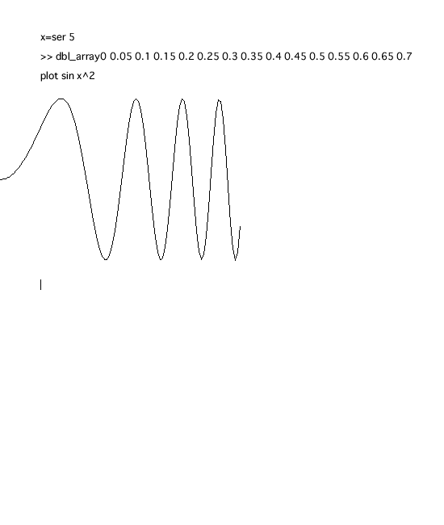
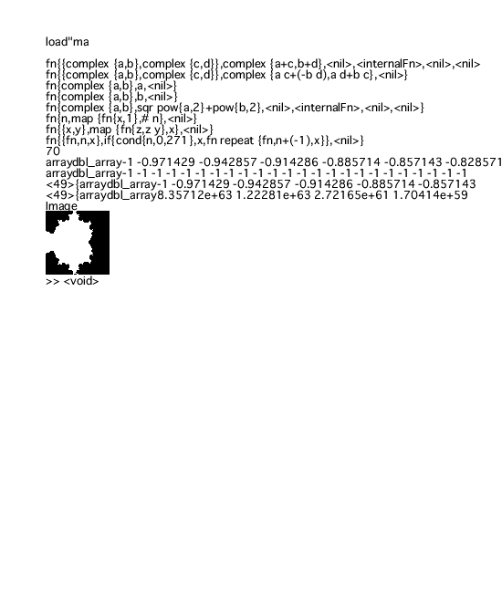

f(x) = x x+2x+1
関数定義は単に'='を使って書く。
かけ算は数学の標準記法どおり"2 x"の様に並べるだけ。
普通に'*'もつかえるけど。
f 8
>> 81
関数はすなわちオペレータであり
数学と同じくオペレータは括弧無しで作用する。
f(8)みたいに括弧を付けてもいいけど。
>>の後ろはCipherからのお返事。
define h(v){
n=6
return n
b={1,2,3}
a=image(n,n)
}
関数定義の第二の記法。return で強制復帰。
fact(n) = if(n<1) 1 else n*fact(n-1)
これは階乗の定義。ifは値を与える。
Y(g) = (s->g(x->(s s)x)) (s->g(x->(s s)x))
h(f)= n->if(n==0) 1 else n*f(n-1)
不動点オペレータYと謎の関数h。
->は無名の関数を生成する２項オペレータ。左辺が引き数、右辺が戻り値。
だから上のf(x)は f = x->x x+2x+1と書いて定義しても良い。
(Y h)5
>> 120
fact 5
>> 120
不動点オペレータにhを与えると階乗と等価である。
x=ser 5
plot sin x x
以下のように、画面に曲線のプロットが出ます。
ただし、これは処理系依存と言うか、言語本来の機能ではありません。

define d(x, f){
if(isid f) {
if(f==x) return 1
else return 0
}
if(type f == 'add) return add map( y->d(x, y),arg f)
if(type f == 'mult){
if(isempty rest f) return d(x,f[0])
return d(x,f[0])*(rest f) + f[0]*d(x, rest f)
}
--if(type f == 'mult) return mult{d(x, first f),(rest f)}+mult{(first f),d(x,rest f)}}
return 0
}
多項式の微分を行う関数。でもいい加減。
d('x, '(2x+1))
>> 2 + 0
シングルクオーテーションは評価しないことを表す。
load"s"
loadは他のプログラムをロードして実行。
中身は以下の通りいい加減なScheme風インタプリタ。
Schemeインタプリタもこんなに簡単。
env={{{},{}}}
envid=1
define assign(var, val){
global env
env[0,0] = cons(var, env[0,0])
env[0,1] = cons(val, env[0,1])
}
define lookup(ev, var){
if(ev=={}) return var
n=search(ev[0,0], var)
if(n!=-1) return ev[0,1,n]
lookup(rest(ev), var)
}
define eval(exp){
global env
if(not islist exp) {
if(isid(exp)) return lookup(env, exp)
return exp
}
if(isempty exp) return exp
op = eval exp[0]
if(op=='lambda) return exp
if(op=='cons) return append(eval exp[1], eval exp[2])
if(op=='car) return (eval exp[1])[0]
if(op=='cdr) return rest eval exp[1]
if(op=='isnull) return exp[1]=={}
if(op=='add) return sum(evalList rest exp)
if(op=='mul) return prod(evalList rest exp)
if(op=='list) return evalList rest(exp)
if(op=='quote) return exp[1]
if(op=='def) {assign(exp[1], eval exp[2]), return}
if(islist op) {
if(op[0]=='lambda){
lam=op
formals = lam[1]
exps = rest rest lam
actuals = rest exp
env = cons( {formals, actuals}, env)
temp = eval(exps[0])
env = rest env
return temp
}
}
if(op=='IF) {
if( eval exp[1] !={} ) {return eval exp[2]}
else {return eval exp[3]}
}
exp
}
define evalList(exps){
map(eval, exps)
}
このeval関数を使うと
eval'{cons,{},{}}
>> {{}}
eval'{add,2,2}
>> 4
eval'{mul,1,2,3,4,5}
>> 120
リストは{1,2,3}とかと表すから見た目は違うけどちゃんとlisp。
typedef complex
complexという名の型を宣言
add(complex(a,b), complex(c,d)) = complex(a+c, b+d)
mul(complex(a,b), complex(a,b)) = complex(a c - b d, a d + b c)
im(complex(a,b)) = a
re(complex(a,b)) = b
abs(complex(a,b)) = sqr(a^2 + b^2)
複素数型の演算の定義。addは演算子'+'の関数としての別名で、
これを定義すれば+演算子が使えるようになる。mulについても同様。
ones(n)=map(x->1, #n)
長さnの１がつまった配列を作る関数を定義する。
#nの#は0から始まってn-1までの配列をつくり出す演算子。
dp(x,y) = map(z->z y, x)
長さnの配列と長さmの配列を作って、
要素がそれぞれの積であるn*mの二次元配列を作る関数を定義する。
image(dp(#20,#20)/400)
imageは二次元配列をとってimage型を返す関数。
read-eval-printループの中では画面にそのままimageが現われる。
n=50
x = dp(ones(n), darr(2#n/n-1))
y = dp(2#n/n-1, darr(ones(n)))
repeat(fn, n, x) = if(n==0) x else fn repeat(fn, n-1, x)
関数のオペレーションをくり返す関数。
c = complex(x,y)
fm = z->z*z+c
t = repeat(fm,9,c)
image(abs t<2)
マンデルブロ集合を描くプログラム。
近々、より数学に近い t = fm^9 c という表記を可能にする予定。
以下が実行時のスクリーンキャプチャ。

ごちゃごちゃ出ているのは、デバグ用に構文木の内部表現を出したもの。
gcd(m, n) = if(m==0) n else gcd(mod(n,m), m)
ユークリッドの互除法により最大公約数を求めるプログラム
fib(n)=if(n==0) 1
else if(n==1) 1
else fib(n-1)+fib(n-2)
フィボナッチ数列のn番目を求めるプログラム。
このままでは、とても遅い。
define Memo(fn){
mem=assoc()
x -> if( inassoc(mem, x) ) return mem[x]
else mem[x] = fn(x)
}
関数を受け取り、その関数をmemoizeにした関数を返す高階関数。
fib = Memo(fib)
こうやって、fibを改良するととても速くなる。
syntax for((a, b, c) sts){
a
while(b){
sts
c
}
}
今の所cipherにはwhileだけでfor文はないが
このようにマクロで定義すれば、ほぼC風の文法が使えるようになる。
つまりＣの文法と同等の能力がcipherマクロにはある。
N=5
for(i=0, i< N, i=i+1){
for(j=1, j<=N, j=j+1){
if(gcd(i,j)==1 & i< j) print {i,j}
}
}
結城さんの「既約分数パズル」をわざとimperativeでかつドン臭い
アルゴリズムでやってみたところ。
define sb(n, a, b) {
m = a+b
if(m[1] > n) return
sb(n, a, m)
print m
sb(n, m, b)
}
define sbt(n){
print( {0,1} )
sb(n, {0,1}, {1,1})
print( {1,1} )
}
sbt 7
imperativeでエレガントなアルゴリズムで解いてみたところ。
define sb(n, a, b, s) {
m = a+b
if(m[1] > n) s
else sb(n, a, m, cons(m, sb(n, m, b, s)))
}
sblist(n) = cons({0,1}, sb(n, {0,1}, {1,1}, {{1,1}}))
エレガントなアルゴリズムを関数的にしてみたところ。
syntax enumerate((i, I) ex) {
merge(map(i->ex, I))
}
rr(N) = enumerate(p,#N) enumerate(q, 1+#N) (if(gcd(p,q)==1 & p< q) {{{p,q}}} else {{}})
関数的でbrute forceな方法。